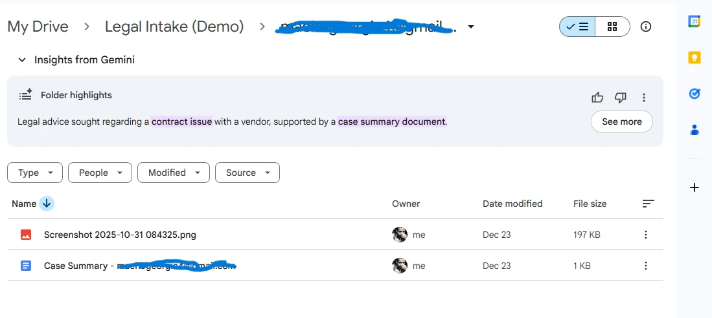
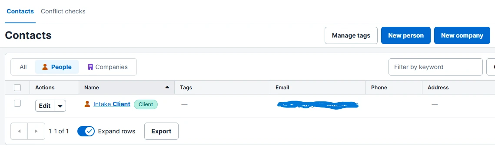

From Unstructured Email to Verified Case File.
How we eliminated manual data entry for a high-volume law firm using Zapier, OpenAI, and Clio.
Technical Brief
Free 15-min intake analysis
The "Bleeding Neck" Problem
Legal intake relies on speed and accuracy. However, this firm was drowning in unstructured emails. Staff had to manually read every inquiry, download attachments, check for existing clients, and type data into Clio.
This manual friction caused three critical failures:
- Data Entry Errors: Typos in names and phone numbers created broken contact records.
- Duplicate Conflicts: Staff often created new contacts for existing clients, fragmenting case history.
- Lost Files: Attachments were left in Outlook instead of being properly filed in the matter folder.
01 The Intelligence Layer (Zapier + AI)
We built a logic-based listener on the Outlook inbox. Instead of just forwarding emails, we pipe the body text into OpenAI via Zapier.
Structured Extraction
The AI doesn't just summarize; it extracts specific entities (Client Name, Urgency, Case Type) into strict JSON format, ensuring clean data for the CRM.

Figure 1: The Logic Map (Outlook -> AI -> Database)
02 Automated Compliance (Google Drive)
A clean file system is a lawyer's best friend. The automation creates a standardized folder structure for every new intake instantly.
No More Lost PDFs
Folder names are auto-generated: [Client Email] - [Date]. All attachments are stripped from the email and archived here automatically.

Figure 2: Automated Client Archives
03 The Source of Truth (Clio)
The final step is the most critical: updating the Legal CRM. The system performs a "Conditional Check" before creating records.
Duplicate Prevention
It searches for the email address first. If the client exists, it appends the new matter. If not, it creates a new Contact. This guarantees 100% database hygiene.

Figure 3: The Final Result (Zero Data Entry)
The Efficiency Shift
The Old Way
- Time per Intake 15-20 mins
- Data Accuracy Human Error Risk
- Availability Office Hours Only
The Automated Way
- Time per Intake ~30 Seconds
- Data Accuracy 100% Normalized
- Availability 24/7/365
Is your intake process bleeding time?
I can deploy this exact architecture for your firm in less than 48 hours.
Automate My Intake